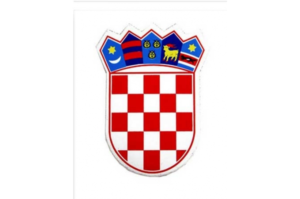

Hrvatski grb
Grb Republike Hrvatske je povijesni
hrvatski grb u obliku štita podijeljen u 25 crvenih i bijelih (srebrnih) polja,
prvo polje je crvene boje. Iznad štita se nalazi kruna s 5 povijesnih hrvatskih
grbova: najstariji poznati grb Hrvatske, grbovi Dubrovačke Republike, Dalmacije, Istre i Slavonije.
Drzave
Priprema1
Gradovi
